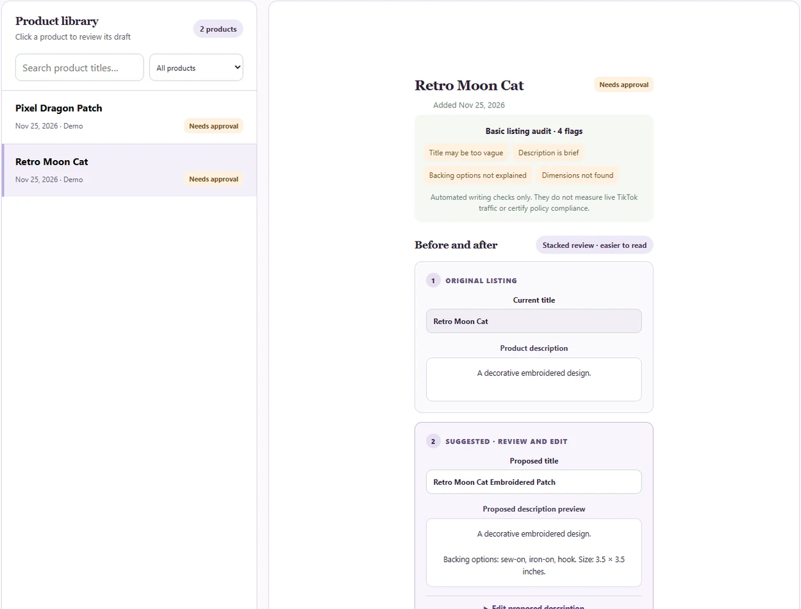

Workflow design · AI-assisted prototyping
Tools for embroidery sellers
Two browser-based projects bring the information a maker needs to check closer to the listing they’re about to publish.
- My contribution
- Requirements, product decisions and hands-on testing
- Projects
- TikTok Shop Optimizer and Embroidery Listing Studio
- Delivery
- Local prototype and private web iterations

Case study
TikTok Shop Optimizer
Bring bulk edits into a review queue
The local prototype accepted a product link or ID, or a bulk XLSX or ZIP export. It applied rules to titles and descriptions, surfaced issues, and offered editable drafts. The review step kept the current listing visible alongside its proposed changes.
Preserve the seller’s workbook
In the batch workflow, the prototype stored the review state locally in IndexedDB. It exported approved title and description edits to a copy of the workbook, preserving the original import and leaving other fields in place.
Introduce AI as an explicit decision
Later private iterations added an optional AI rewrite and a step for confirming product facts, including sizes. I worked through how a seller could practice, review a suggestion, and choose which edits to apply before manually making changes live.
Interactive portfolio demo
Check a sample listing
This browser-only demo uses fictional text and three checks from the local Optimizer prototype. Edit the listing and check it again.
Review feedback
Check the sample to see which product details are missing.
Case study
Embroidery Listing Studio
Use the production files as the starting point
I specified a DST or ZIP upload workflow that could present all detected sizes. The draft needed to describe the physical item the buyer would receive, including practical choices like backing.
Translate production terms for the buyer
In testing, I flagged terms like “in the hoop” when they described how a design is produced. I guided revisions so the generated listing would use language a patch buyer could act on and retain the details the maker had confirmed.
- Import. Start with a DST file or a ZIP of size variants.
- Verify. Review detected sizes and confirm the details relevant to the physical product.
- Revise. Review the AI-assisted draft and clarify the language before using it.